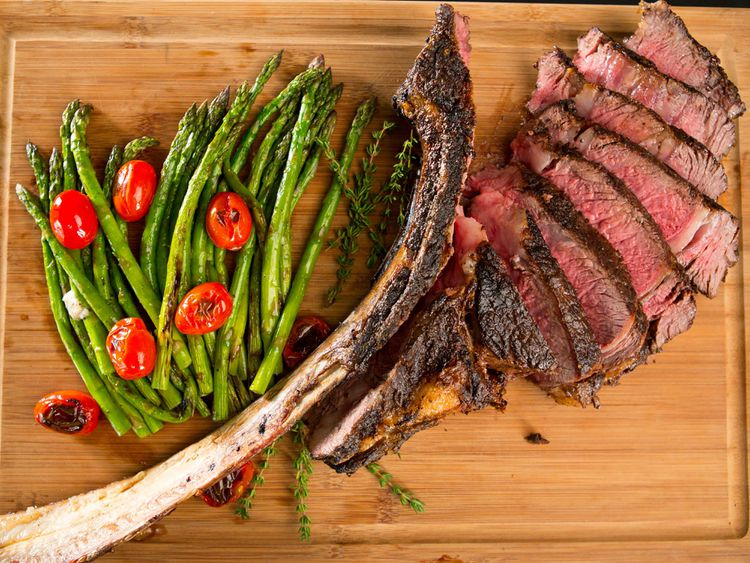

Ultimate Tomahawk Steak
This is the ultimate tomahawk steak recipe, destined to impress, whether you're
sharing it with one hungry loved one or serving it up to your whole family.
Be sure to call your butcher ahead of time to reserve a tomahawk.

| Prep Time |
Cook Time |
Stand Time |
Rest Time |
Total Time |
Servings |
| 5 mins |
30 mins |
30 mins |
15 mins |
1 hr 15 mins |
4 |
Ingredients
- 3 1/2 pound tomahawk rib eye steak
- 1 1/2 tablespoons kosher salt
- 2 1/2 teaspoons ground black pepper
Directions
- Step 1
- Remove steak from refrigerator and let stand at room temperature
30 minutes to an hour before cooking.
- Step 2
- Preheat the grill to medium-high, 400 to 450 degrees F(200 to 230 degrees C).
Sprinkle steak evenly and liberally on all sides with salt and black pepper.
- Step 3
- Lightly coat grill grates with oil or grilling spray. Place steak on hot grates,
and grill, undisturbed, until it releases easily from the grates, about 4 minutes.
Flip, and repeat on the other side. Continue grilling, turning occasionally, until
a thermometer inserted into the thickest portion of steak registers 125 degrees
F (52 degrees C), 30 to 40 minutes.
- Step 4
- Transfer steak to a cutting board; let rest 15 minutes. Run a knife along the inside
edge of the bone to remove steak from the bone in 1 piece; slice against the grain to serve.
Return to home page